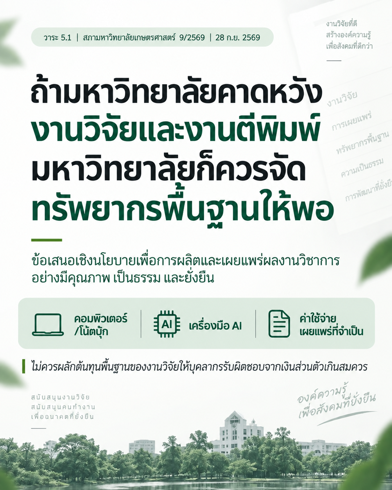

เมื่อมหาวิทยาลัยคาดหวังงานวิจัย มหาวิทยาลัยก็ควรจัดทรัพยากรพื้นฐานให้เพียงพอ
{kind=link}

วาระ 5.1 ในการประชุมสภามหาวิทยาลัยเกษตรศาสตร์ ครั้งที่ 9/2569 วันที่ 28 กันยายน 2569 เสนอเรื่อง การจัดให้มีค่าสนับสนุนการทำวิจัยขั้นพื้นฐานเชิงนโยบาย เพื่อส่งเสริมการผลิตและเผยแพร่ผลงานวิชาการอย่างมีคุณภาพ เป็นธรรม และยั่งยืน
หลักคิดสำคัญคือ เมื่อมหาวิทยาลัยกำหนดให้การวิจัยและการตีพิมพ์เป็นภารกิจ และใช้ผลงานเหล่านี้ในการประเมิน ต่อสัญญา หรือพิจารณาความก้าวหน้าในอาชีพ มหาวิทยาลัยก็ควรจัดทรัพยากรพื้นฐานที่ทำให้บุคลากรสามารถทำภารกิจนั้นได้จริง
ทรัพยากรพื้นฐานของงานวิจัยเปลี่ยนไปแล้ว
ทรัพยากรพื้นฐานในวันนี้ไม่ได้มีเพียงโต๊ะทำงานหรือห้องปฏิบัติการ แต่รวมถึงเครื่องคอมพิวเตอร์ที่เหมาะสม เครื่องมือและบริการ AI ซอฟต์แวร์ ฐานข้อมูล ตลอดจนค่าใช้จ่ายในการเผยแพร่ผลงาน หรือ APC ในกรณีที่จำเป็น
ประเด็นจึงไม่ใช่การให้มหาวิทยาลัยออกค่าใช้จ่ายทุกอย่างแก่ทุกคน แต่คือการออกแบบระบบที่ตอบได้ว่า อะไรคือทรัพยากรขั้นต่ำที่มหาวิทยาลัยควรจัดให้ อะไรควรเป็นบริการกลาง อะไรควรเป็นสิทธิรายบุคคล และส่วนใดเหมาะกับระบบร่วมจ่าย
ความเป็นธรรมต้องคำนึงถึงสาขา ความคาดหวัง และสิ่งที่บุคลากรควบคุมได้
การสนับสนุนไม่จำเป็นต้องเหมือนกันทุกสาขา เพราะธรรมชาติของงาน เครื่องมือ และต้นทุนแตกต่างกัน แต่ความแตกต่างต้องมีเหตุผลและตรวจสอบได้ หากมหาวิทยาลัยกำหนดความคาดหวังด้านผลงานไว้สูง ทรัพยากรและระยะเวลาที่จัดให้ก็ควรสอดคล้องกับความคาดหวังนั้น
ยิ่งเมื่อผลงานตีพิมพ์มีผลต่อการต่อสัญญาหรือการจ้างงาน กระบวนการประเมินต้องคำนึงถึงสิ่งที่บุคลากรควบคุมได้จริง ไม่ผลักต้นทุนพื้นฐานของภารกิจองค์กรไปเป็นภาระเงินส่วนตัวเกินสมควร
เริ่มจากข้อมูล ทางเลือก และโครงการนำร่องหนึ่งปี
ข้อเสนอนี้ไม่ได้เรียกร้องให้ตั้งงบประมาณก้อนใหญ่ทันที แต่เสนอให้เริ่มจาก ข้อมูลจริง ทางเลือกเชิงนโยบาย และโครงการนำร่องหนึ่งปี แล้วติดตามผลทั้งด้านคุณภาพ ความคุ้มค่า และความเป็นธรรม ก่อนพิจารณารูปแบบระยะยาว
หลักการที่ควรชัดคือ เมื่อองค์กรกำหนดความคาดหวังต่อผลงาน องค์กรก็ควรรับผิดชอบต่อเงื่อนไขและทรัพยากรที่ทำให้คนสามารถสร้างผลงานนั้นได้ด้วย
เอกสารประกอบวาระ ดาวน์โหลดข้อเสนอเชิงนโยบายฉบับเต็ม (PDF) การจัดให้มีค่าสนับสนุนการทำวิจัยขั้นพื้นฐาน เพื่อส่งเสริมการผลิตและเผยแพร่ผลงานวิชาการอย่างมีคุณภาพ เป็นธรรม และยั่งยืน